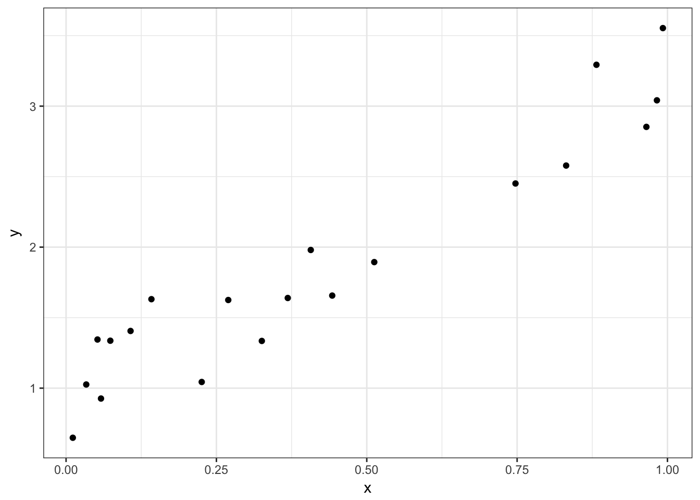
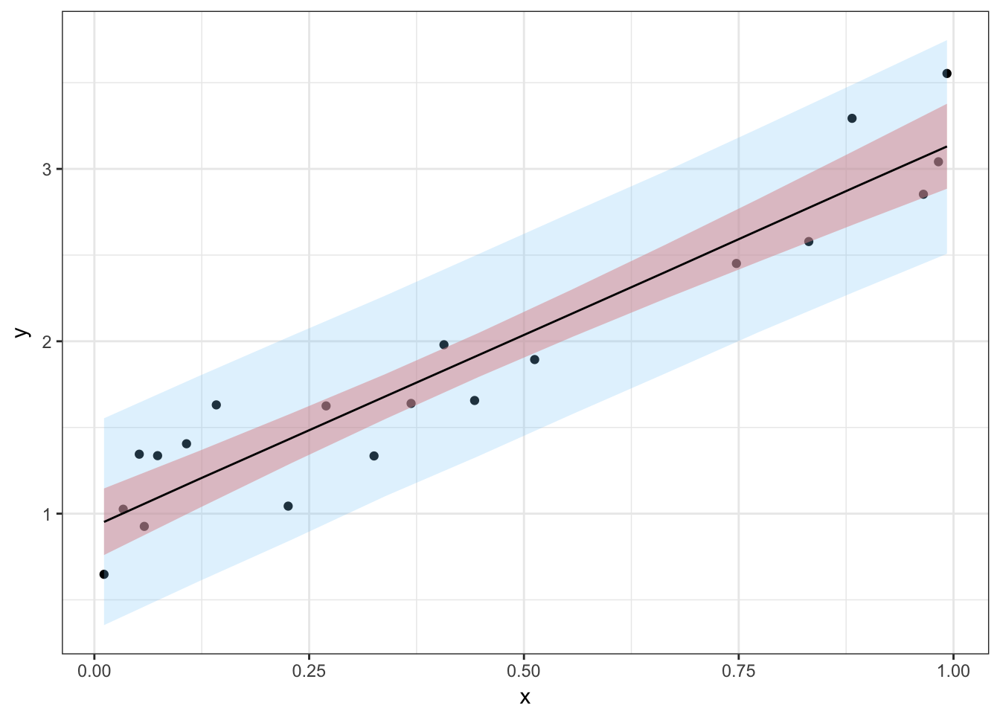
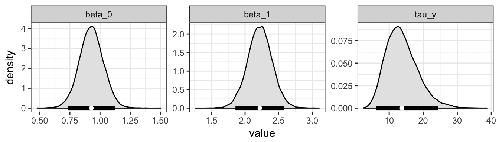
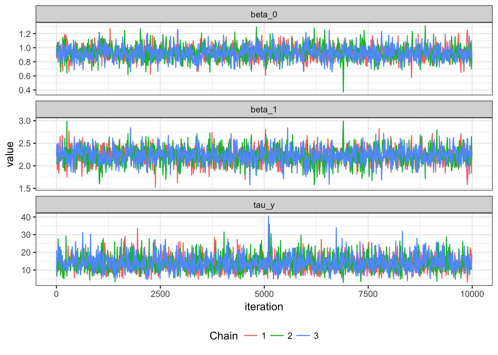

The packages mmcc creates tidy summaries of Bayesian models, in the fashion of broom, with one important difference - mmcc uses a data.table instead of a tibble, due to the size of the output that is all too easily possible in Bayesian models.
The aim of this vignette is to demonstrate how to use the two key functions of mmcc, mcmc_to_dt() and tidy (which actually calls mmcc:::tidy.mcmc.list under the hood).
First, we simulate some data to fit a Bayesian model to.
set.seed(4000)
N <- 20
x <- sort(runif(n = N))
y <- rnorm(n = N,
mean = 2*x + 1,
sd = 0.25)
dat <- data.frame(x = x, y = y)
library(ggplot2)
ggplot(data = dat,
aes(x = x,
y = y)) +
geom_point() +
theme_bw()
Then, we simulate some values for predicting
M <- 10
x_pred <- seq(from = min(x),
to = max(x),
length.out = M)Next, we fit the model, specified as
jags_model <-
"model{
# model block
for (i in 1:n){
y[i] ~ dnorm(mu[i], tau_y)
mu[i] <- beta_0 + beta_1*x[i]
}
# prediction block
for (i in 1:m){
y_pred[i] ~ dnorm(mu_pred[i], tau_y)
mu_pred[i] <- beta_0 + beta_1*x_pred[i]
}
# priors
beta_0 ~ dunif(-1e12, 1e12)
beta_1 ~ dunif(-1e12, 1e12)
tau_y <- exp(2*log_sigma)
log_sigma ~ dunif(-1e12, 1e12)
}"and then generate the mcmc_object with the rjags package.
library(rjags)
model <- jags.model(file = textConnection(jags_model),
data = list(n = N,
x = x,
y = y,
m = M,
x_pred = x_pred),
n.chains = 3)
#> Compiling model graph
#> Resolving undeclared variables
#> Allocating nodes
#> Graph information:
#> Observed stochastic nodes: 20
#> Unobserved stochastic nodes: 13
#> Total graph size: 131
#>
#> Initializing modelWe draw burn-in samples and posterior inference samples for all terms in the model.
burn <- jags.samples(model = model,
variable.names = c("beta_0",
"beta_1",
"tau_y",
"mu"),
n.iter = 5000)
samples <- coda.samples(model = model,
variable.names = c("beta_0",
"beta_1",
"tau_y",
"mu_pred",
"y_pred"),
n.iter = 10000)We can now convert the posterior samples to a data.table and summarise the regression parameters. A data.table object is very useful in this case when you have many samples for many parameters.
library(mmcc)
library(broom)
# convert to a data.table
samples_dt <- mcmc_to_dt(samples)
samples_dt
#> iteration chain parameter value
#> 1: 1 1 beta_0 0.8480091
#> 2: 2 1 beta_0 1.0317431
#> 3: 3 1 beta_0 1.0858154
#> 4: 4 1 beta_0 1.0170292
#> 5: 5 1 beta_0 1.0206794
#> ---
#> 689996: 9996 3 y_pred[10] 2.7264807
#> 689997: 9997 3 y_pred[10] 3.0500821
#> 689998: 9998 3 y_pred[10] 3.9024871
#> 689999: 9999 3 y_pred[10] 2.6625362
#> 690000: 10000 3 y_pred[10] 3.2000107
pars_dt <- tidy(samples,
conf_level = 0.95,
colnames = c("beta_0",
"beta_1",
"tau_y"))
pars_dt
#> parameter mean sd 2.5% median 97.5%
#> 1: beta_0 0.9252373 0.1013678 0.7271412 0.9245073 1.127884
#> 2: beta_1 2.2250688 0.1865195 1.8540305 2.2263502 2.591262
#> 3: tau_y 13.7774019 4.6076006 6.2404060 13.2824062 24.221637Summarise the line of best fit, mu, and the predictions, y_pred,
mu_dt <- tidy(samples,
conf_level = 0.95,
colnames = "mu_pred")
y_dt <- tidy(samples,
conf_level = 0.95,
colnames = "y_pred")For plotting, we add the prediction \(\boldsymbol{x}\) values to these data tables.
mu_dt[ , x:= x_pred]
y_dt[ , x:= x_pred]
y_dt
#> parameter mean sd 2.5% median 97.5% x
#> 1: y_pred[1] 0.9484366 0.3020871 0.3528022 0.9495731 1.544930 0.0112199
#> 2: y_pred[2] 1.1948630 0.2994895 0.6025414 1.1957102 1.792432 0.1202395
#> 3: y_pred[3] 1.4333890 0.2940765 0.8523603 1.4332251 2.015860 0.2292590
#> 4: y_pred[4] 1.6779942 0.2935847 1.1004014 1.6777275 2.261937 0.3382786
#> 5: y_pred[5] 1.9229848 0.2936715 1.3399100 1.9235644 2.494425 0.4472982
#> 6: y_pred[6] 2.1622780 0.2947800 1.5780206 2.1647440 2.746699 0.5563177
#> 7: y_pred[7] 2.4068259 0.2951488 1.8154635 2.4086055 2.986253 0.6653373
#> 8: y_pred[8] 2.6482932 0.2985930 2.0587315 2.6471377 3.236668 0.7743569
#> 9: y_pred[9] 2.8869012 0.3085077 2.2762701 2.8875675 3.492262 0.8833765
#> 10: y_pred[10] 3.1312745 0.3116400 2.5104572 3.1321149 3.746156 0.9923960Now we’ll generate a plot that shows the data, a 95% credible interval for the predictions, \({\hat{\bm{y}}}_{pred}\), and a 95% credible interval for their means, \({\hat{\bm{\mu}}}_{pred}\).

If we tidy the samples object, we can look at the distribution of values
tidy_samples <- mcmc_to_dt(samples,
colnames = c("beta_0",
"beta_1",
"tau_y"))
ggplot(data = tidy_samples,
aes(x = value)) +
geom_density(color = "black",
fill = "grey90") +
facet_wrap(~parameter,
nrow = 1,
scales = "free") +
theme_bw() +
geom_segment(data = pars_dt,
aes(x = `2.5%`,
xend = `97.5%`),
y = 0,
yend = 0,
size = 2) +
geom_point(data = pars_dt,
aes(x = mean),
y = 0,
color = "white")
We can also thin to create trace plots and plot per chain
tidy_samples_10 <- thin_dt(tidy_samples, thin = 10)
ggplot(data=tidy_samples_10, aes(x=iteration, y=value)) +
geom_line(aes(group=chain, color=factor(chain))) +
facet_wrap( ~ parameter, ncol=1, scales="free_y") +
theme_bw() +
theme(legend.position = "bottom") +
scale_color_discrete(name="Chain")